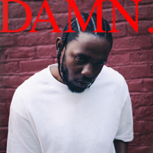

After Completing Highschool, I decided to make a big decision in my life and to attend LeWagon to learn how to code and to start a new life as a programmer.
|  |
DAMN- Kendrick LamarMy number one album of all time would have to be DAMN by Kendrick Lamar. With his fourth studio album, Lamar does not disappoint, and flawessly delivers a perfect combonation of mainstream and concious sound that appeals to all listeners. songs such as DNA and Element leave you hungry for more, and give a sense of replayability to the project as a whole. |
My Beautiful Dark Twisted Fantasy, by Kanye WestComing in at number two would have to be My Beautiful Dark Twisted Fantasy, by the great Kanye West. MBDTF comes as close to a perfect album as you can get, with every single song being a masterpiece. Countless hits such as Monster, and Devil in a New Dress deliver the classic feature ridden, heavy sound that makes us love kanye, with more refined songs such as All of the lights and The blame game delivering the softer but more impactful sound that give a timeless feel to an extraordinary album. |
|
Good kid, M.a.a.D City, by Kendrick LamarGood kid, M.a.a.D City, by Kendrick Lamar is an overall storytelling masterpiece laid by Kendrick in his first offical studio album. With a concrete theme that is present throughout the entire album that details the daily struggles of growing up in Compton, you get a real sense of creativity that most bodies of work simply lack. Featuring skits in between songs featuring some of Lamars closest people in his life, including his parents and his best friends, you really are taken to a new level and are able to envision exactly what lamar writes about. |
This page has been produced by Joshua Conduah - LeWagon Kyoto.